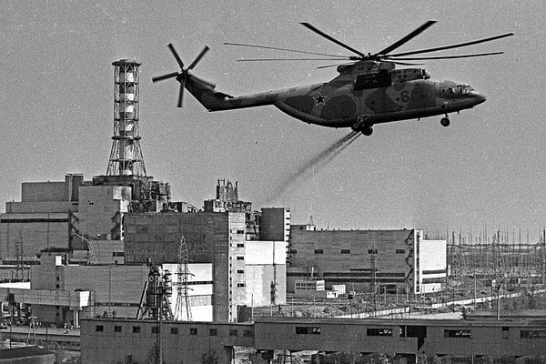
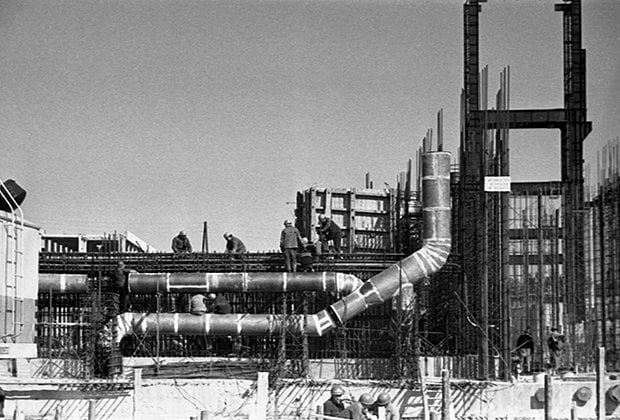
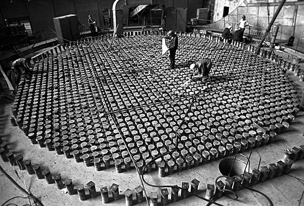

Free AI Website Maker
День 26 апреля 1986 года навсегда вошел в историю. Самая страшная катастрофа на объекте атомной энергетики — авария на Чернобыльской атомной электростанции — перевернула все представления людей о мирном атоме. В результате аварии произошел взрыв с выбросом радиоактивных веществ. «Лента.ру» рассказывает о причинах и последствиях аварии на ЧАЭС.

Чернобыльскую атомную электростанцию имени В.И. Ленина (ЧАЭС) начали строить в 1970 году, тогда было выбрано подходящее место на берегу реки Припять в Киевской области. Атомную станцию заложили:
в 3 километрах от города Припять, построенного тогда же специально для сотрудников станции;
в 11 километрах от границы с Белорусской ССР;
в 15 километрах от города Чернобыль;
в 110 километрах от столицы Украинской ССР Киева.
Спустя семь лет ЧАЭС была построена, и в эксплуатацию начали вводиться энергоблоки.

Все четыре энергоблока ЧАЭС, работавшие к апрелю 1986 года, были оборудованы РБМК-1000 — канальными реакторами большой мощности (1000 мегаватт). Первое поколение установлено в первом и втором энергоблоках, второе, выпущенное в связи с ужесточением правил безопасности, — в третьем и четвертом.
Free AI Website Maker